首页 > MySQL教程 > MySQL的安装和配置
MySQL安装配置教程（Windows系统）
MySQL 允许在多种平台上运行，但由于平台的不同，安装方法也有所差异。本节主要介绍如何在 Windows 平台上安装配置 MySQL。
Windows 平台下提供两种安装 MySQL 的方式：
用户使用图形化安装包安装配置 MySQL 的步骤如下：
有的会直接进入“Choosing a Setup Type（安装类型选择）”窗口，根据右侧的安装类型描述文件选择适合自己的安装类型，这里选择默认的安装类型，如图所示。
步骤 2)：根据所选择的安装类型安装 Windows 系统框架（framework），单击 Execute 按钮，安装程序会自动完成框架的安装，如图所示。
步骤 3)：当弹出安装程序窗口时，勾选“我同意许可条款和条件”复选框，然后单击“安装”按钮，如图所示。

步骤 4)：弹出“设置成功”的界面，表示该框架已经安装完成，单击“关闭”按钮即可。所有的框架安装均可参考本操作，如图所示。

步骤 5)：安装完成后会在【status】列表下显示 Complete（安装完成）。所需框架均安装成功后，点击 Next 按钮，如图所示。
步骤 6)：进入安装确认窗口，点击 Execute 按钮，开始 MySQL 各个组件的安装，如图所示。
步骤 7)：开始安装 MySQL 文件，安装完成后在【Status】列表下显示 Complete，如图所示。
步骤 1)：在安装的最后一步中，点击 Next 按钮进入服务器配置窗口，进行配置信息的确认，确认后点击 Next 按钮，如图所示。
步骤 4)：进入设置服务器的密码窗口，重复输入两次登录密码（建议字母数字加符号），点击 Next 按钮，如图所示。

步骤 7)：最后打开 Windows 任务管理器对话框，可以看到 MySQL 服务进程 mysqld.exe 已经启动了，如图所示。
至此，就完成了 Windows 操作系统下 MySQL 数据库的安装和配置。
Windows 平台下提供两种安装 MySQL 的方式：
- MySQL 图形化安装（.msi 安装文件）。
- 免安装版（.zip 压缩文件）。
用户使用图形化安装包安装配置 MySQL 的步骤如下：
安装MySQL
步骤 1)：双击下载的 MySQL 安装文件，进入 MySQL 安装界面，首先进入“License Agreement（用户许可证协议）”窗口，选中“I accept the license terms（我接受系统协议）”复选框，单击“Next（下一步）”按钮即可。有的会直接进入“Choosing a Setup Type（安装类型选择）”窗口，根据右侧的安装类型描述文件选择适合自己的安装类型，这里选择默认的安装类型，如图所示。
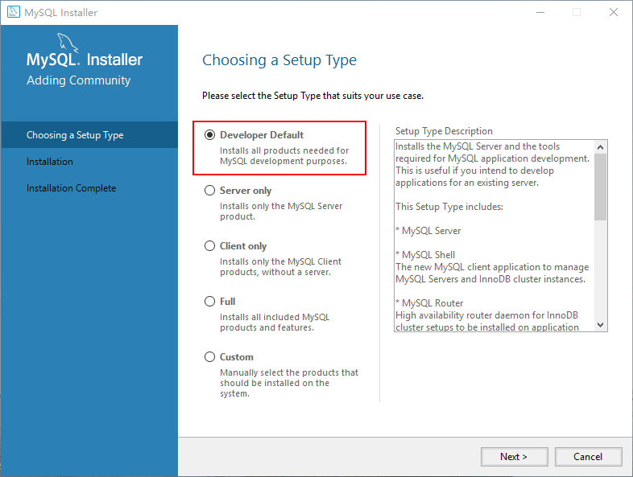
注意：图中列出了 5 种安装类型，分别是：
- Developer Default：默认安装类型；
- Server only：仅作为服务；
- Client only：仅作为客户端；
- Full：完全安装；
- Custom：自定义安装类型。
步骤 2)：根据所选择的安装类型安装 Windows 系统框架（framework），单击 Execute 按钮，安装程序会自动完成框架的安装，如图所示。
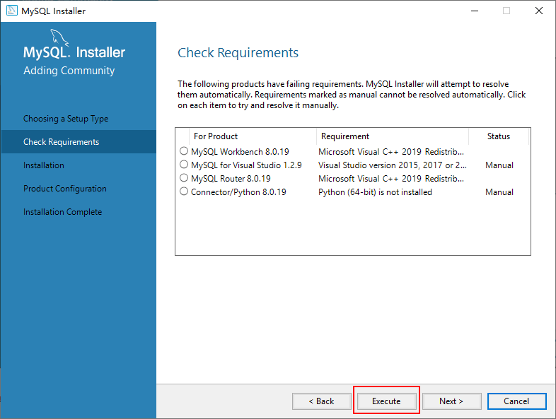
步骤 3)：当弹出安装程序窗口时，勾选“我同意许可条款和条件”复选框，然后单击“安装”按钮，如图所示。
步骤 4)：弹出“设置成功”的界面，表示该框架已经安装完成，单击“关闭”按钮即可。所有的框架安装均可参考本操作，如图所示。
步骤 5)：安装完成后会在【status】列表下显示 Complete（安装完成）。所需框架均安装成功后，点击 Next 按钮，如图所示。
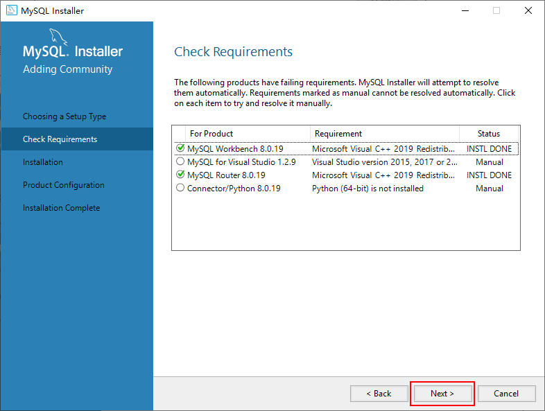
步骤 6)：进入安装确认窗口，点击 Execute 按钮，开始 MySQL 各个组件的安装，如图所示。
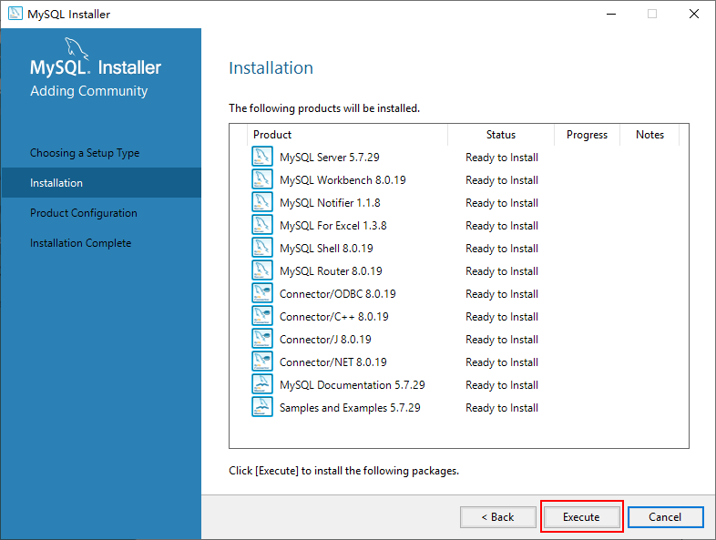
步骤 7)：开始安装 MySQL 文件，安装完成后在【Status】列表下显示 Complete，如图所示。
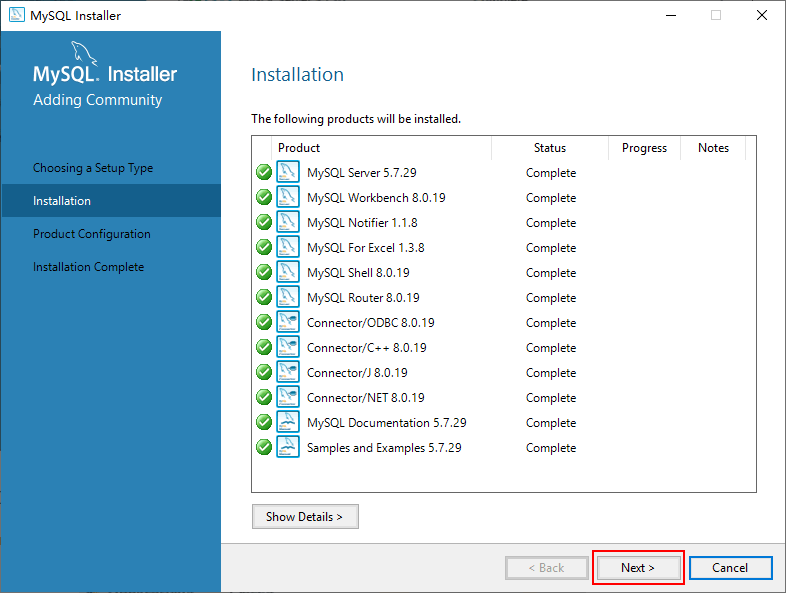
配置MySQL
MySQL 安装完成之后，需要对服务器进行配置，具体配置步骤如下：步骤 1)：在安装的最后一步中，点击 Next 按钮进入服务器配置窗口，进行配置信息的确认，确认后点击 Next 按钮，如图所示。
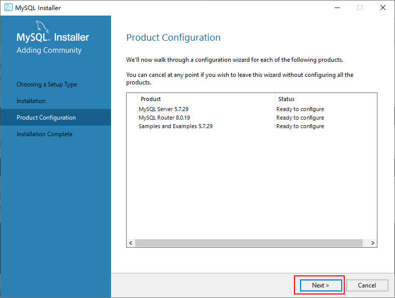
步骤 2)：进入 MySQL 网络类型配置窗口，采用默认设置，点击 Next 按钮，如图所示。
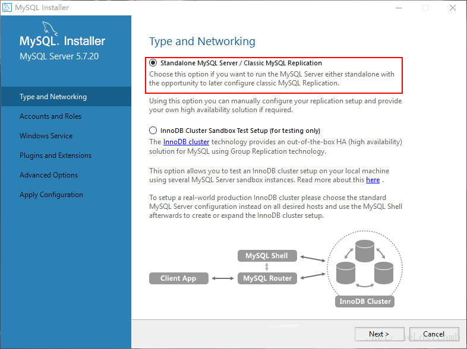
步骤 3)：进入 MySQL 服务器类型配置窗口，采用默认设置，点击 Next 按钮，如图所示。
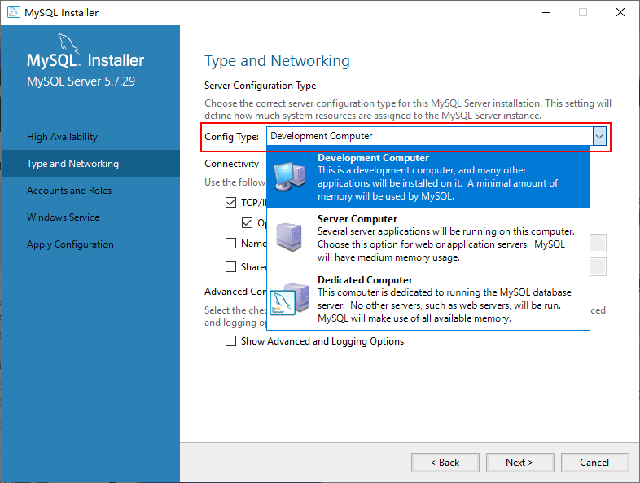
上图中 3 个选项的具体含义如下：
- Development Machine（开发机器）：安装的 MySQL 服务器作为开发机器的一部分，在三种可选的类型中，占用的内存最少；
- Server Machine（服务器）：安装的 MySQL 服务器作为服务器机器的一部分，占用的内存在三种类型中居中；
- Dedicated MySQL Server Machine（专用服务器）：安装专用 MySQL 数据库服务器，占用机器全部有效的内存。
提示：初学者建议选择“Development Machine”选项，这样占用系统的资源比较少。
MySQL 端口号默认 3306，如果没有特殊需求一般不建议修改。继续点击 Next 按钮即可。
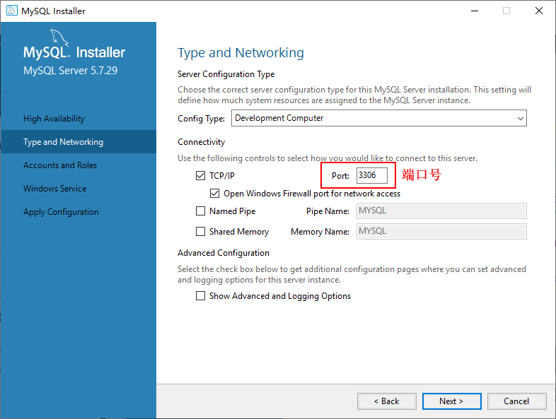
步骤 4)：进入设置服务器的密码窗口，重复输入两次登录密码（建议字母数字加符号），点击 Next 按钮，如图所示。
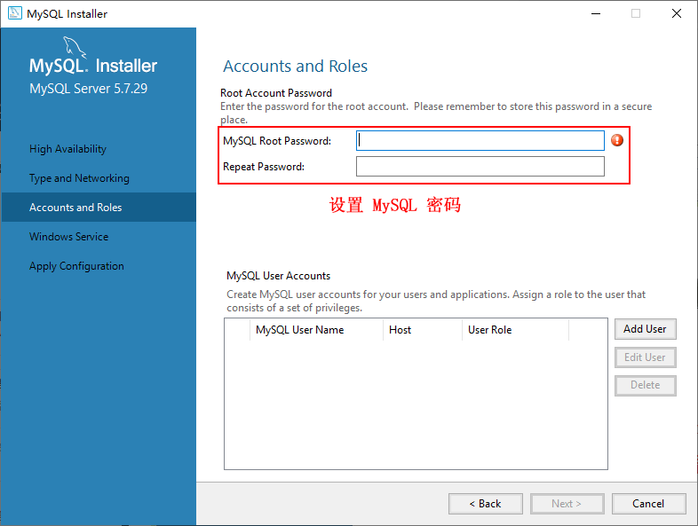
步骤 5)：进入服务器名称窗口设置服务器名称，这里无特殊需要也不建议修改。继续单击 Next 按钮，如图所示。提示：系统默认的用户名为 root，如果想添加新用户，可以单击“Add User（添加用户）”按钮进行添加。
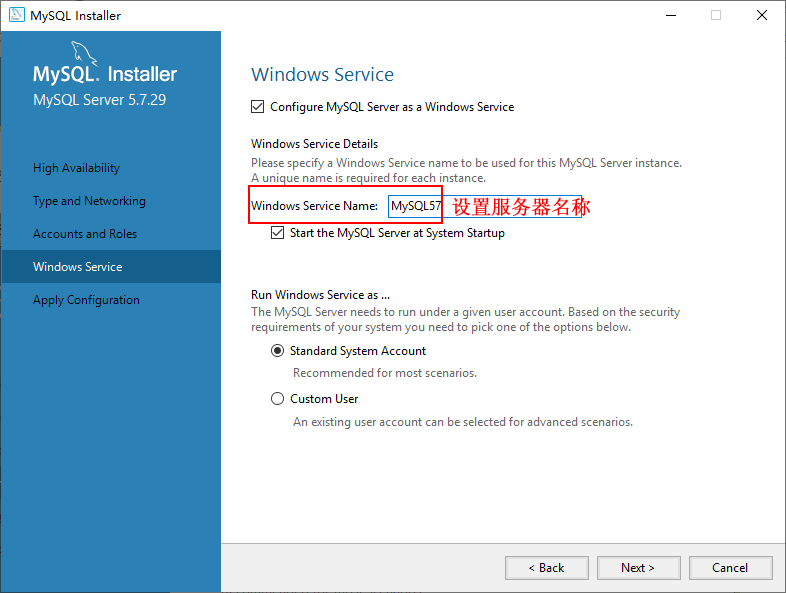
步骤 6)：打开确认设置服务器窗口，点击 Execute 按钮完成 MySQL 的各项配置，如图所示。都检测通过后，继续点击 Finish、Next 安装就可以配置完成了。注意：有些安装的时候会在“Starting the server”位置卡住不动，然后提示错误无法安装，可能是你下载的数据库版本过高与系统不匹配，可以降低数据库版本或者升级系统版本。
步骤 7)：最后打开 Windows 任务管理器对话框，可以看到 MySQL 服务进程 mysqld.exe 已经启动了，如图所示。
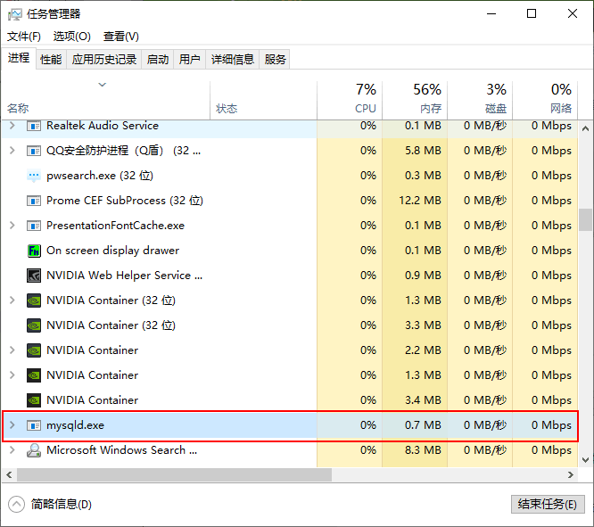
至此，就完成了 Windows 操作系统下 MySQL 数据库的安装和配置。
关注公众号「站长严长生」，在手机上阅读所有教程，随时随地都能学习。内含一款搜索神器，免费下载全网书籍和视频。

微信扫码关注公众号